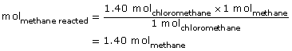

Module 7—Principles of Chemical Equilibrium
 Explore
Explore
 Self-Check
Self-Check
In Lesson 3, you completed a series of calculations to determine the percent yield to analyze the following system:
CH4(g) + Cl2(g)  CH3Cl(g) + HCl(g)
CH3Cl(g) + HCl(g)
Initial quantity of CH4(g) = 2.00 mol
Quantity of CH3Cl(g) = 1.40 mol
SC 1. Calculate the quantity of CH4(g) that reacted and that remains unreacted. Explain how you completed these calculations.
SC 2. Recall that 10.00 mol of chlorine were placed into the system initially. Could the process you explained in SC 1 be used to calculate the quantity of Cl2(g) and HCl(g) in the system at equilibrium?
Self-Check Answers
Contact your teacher if your answers vary significantly from the answers provided here.
SC 1. Mole ratios can be used to complete the calculation for quantity of CH4(g) reacted.

The moles of methane that reacted were 1.40 mol.
The quantity of methane remaining is 2.00 mol − 1.40 mol = 0.60 mol.
SC 2. Using mole ratios will allow the calculation of the remaining substances.
Moles of chlorine reacted will be equal to the moles of methane that reacted, since they combine in 1:1 proportions. Therefore, moles of Cl2(g) reacted = 1.40 mol and moles of Cl2(g) remaining is 10.00 mol –1.40 mol = 8.60 mol.
Moles of HCl(g) produced will be equal to moles of cloromethane produced, since the reactants have 1:1 proportions (as shown in the balanced chemical equation). Therefore, moles of HCl(g) = 1.40 mol.
 Read
Read
The process you described in your answers to SC 1 and SC 2 requires you to apply your knowledge of stoichiometry to a new situation. You know the quantity of one of the products and one of the reactants, and you have a balanced chemical equation. It is possible to use this information and the ratios of coefficients between species to determine the quantities of the other substances in the system.
Using changes in chemical quantities of substances in a system as it approaches equilibrium can be summarized using a structure called an ICE table. To read more about an ICE table and to learn how the calculations you performed are used in its completion, read page 681 in the textbook and work through “Sample problem 15.1.” As you work through the sample problem, note how the stoichiometric ratios are applied to the change in concentration for each species in the system.
Self-Check
SC 3. What do the letters in ICE represent?
SC 4. Why is the value for the change in the quantity of each species important in completing an ICE table?
SC 5. What does a negative sign in the change row of an ICE table represent?
Self-Check Answers
Contact your teacher if your answers vary significantly from the answers provided here.
SC 3. I = initial, C = change, and E = equilibrium concentrations of reactants and products in the equilibrium system.
SC 4. The change in concentration of each species is an important value to have because it identifies the quantity of substance that has undergone chemical change as equilibrium has been established. In a system at equilibrium, some quantity of each species in the system will be present; therefore, the change in quantity for one substance is required to interpret the change in quantity for other substances in the system.
SC 5. A negative sign represents a decrease in quantity for that substance. A decrease in chemical quantity or moles for reactants is expected since reactants are consumed by the forward reaction as the system establishes equilibrium.